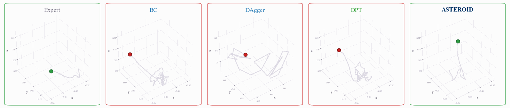
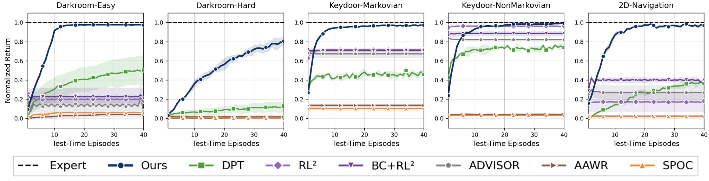

Rummaging
Blind Cube Pick
Wrist-Camera Peg Insertion
Tactile Cube Pick
Habitat Object Search
Meta-Learning Benchmark
A goal is hidden behind one of three doors, fixed across episodes. The agent only observes its own position and must use feedback from past episodes to find the goal. Only ASTEROID learns to rule out failed doors and commit to the remaining ones.
Agents in partially observed environments must explore to infer hidden, task-relevant information before acting effectively. Learning this tabula rasa via online RL is sample-inefficient, while imitating clairvoyant experts fails: the expert already knows the hidden state, so it never demonstrates the information-gathering the student needs. ASTEROID resolves this by decoupling the source of the history from the source of the supervision — the student collects on-policy context under partial observability, and the privileged expert labels actions conditioned on that context. Iterating this procedure converges to Bayesian posterior sampling, a provably efficient exploration strategy. Across 11 environments spanning discrete exploration, navigation, Procgen, and robot manipulation, ASTEROID achieves ~2× higher returns under fixed exploration budgets, uses up to ~100× fewer training interactions, and transfers to vision-denied real-world manipulation with a 40% higher success rate than baselines.
ASTEROID (Asymmetric Student Teacher Rollout In-context Distillation) is an iterative procedure that alternates between collecting on-policy histories from the student and training a history-conditioned student policy on privileged expert labels.
The student \(\pi_{\theta}\) is rolled out under partial observability, producing a history \(h_t = (o_0, a_0, r_0, \ldots, o_t)\) of observations, actions, and rewards. In the three-door task, the student tries a door and observes whether it succeeded. Failed attempts are not discarded — they become training context, specifying exactly what evidence the student has accumulated. Training on histories induced by the student's own behavior minimizes the distribution shift between training and deployment, avoiding the intractable coverage assumptions of offline in-context methods like DPT.
A clairvoyant expert \(\pi^*\) that observes the hidden goal labels the correct next action from the state the student reached. If the student tried door 1 and failed, the expert labels the same history “go to door 2” when the goal is door 2, and “go to door 3” when it is door 3. Trained with a conditional imitation loss over many tasks, the student learns to sample only from the plausible hypotheses that remain, never repeating a door its own experience has ruled out. Iterating with growing context length, the policy converges to posterior sampling:
\[ \pi(a_t \mid h_t) \;=\; \int \pi^*(a_t \mid s)\, p(s \mid h_t)\, ds. \]
In general POMDPs the hidden state changes within an episode — e.g., a locally observed maze where the agent's global position is never revealed. ASTEROID samples a timestep \(t\), rolls out the student to produce \(h_t\), and queries the expert from the reached state for the label \(a^*_t\). Each action and observation prunes some plausible hidden states while keeping others, and biasing sampled timesteps toward longer horizons induces a natural context-length curriculum. The recipe is unchanged: collect the histories the student actually visits, then teach how those histories should guide future behavior.
On wrist-camera peg insertion and tactile picking, ASTEROID is ~100× more efficient in environment steps than RL baselines with privileged supervision. Under extreme partial observability — tactile sensing with no proprioception — it reaches 92% success. Unlike offline asymmetric methods (AAWR), it requires no coverage-sensitive offline dataset.
In wrist-camera peg insertion, the policy actively scans the tabletop to localize the object and target, and recovers after failed attempts. With only tactile sensors — even without proprioception — it probes multiple grasp points and uses contact feedback to choose the next attempt, generalizing to unseen objects and colors.

In Procgen mazes with only 3×3 local observations, ASTEROID maintains an implicit belief over the maze and goal, achieving higher success rates in nearly half as many timesteps as baselines. BC succeeds only through inefficient random search; DPT fails from incomplete offline coverage of test-time histories. The same recipe scales to visual navigation: Habitat object search from egocentric images and ant navigation with 8-dof continuous control.
In Procgen mazes, Habitat object search, and ant navigation, the learned policies explore goal-directedly, remember failed locations through their history, and avoid redundant search — behavior resembling posterior sampling, learned purely through supervision.
On gridworld benchmarks requiring memory and task inference (hidden goals, key-door), ASTEROID is the only method to learn effective exploration and converge to true performance within the test-time budget, significantly outperforming DPT, RL2, and imitation-informed RL baselines.

In the KeyDoor task, the agent must find a hidden key and then a hidden door across episodes. ASTEROID retains what it discovered in earlier episodes and chains this information over long horizons.
We transfer policies trained entirely in simulation to a real robot that must pick up a cube using only proprioception (joint angles, gripper distance) — it cannot see the cube. ASTEROID explores grasp locations and uses contact feedback to rule out empty regions, while behavior cloning goes out of distribution after its first failed grasp.
ASTEROID
BC
@misc{poddar2026asteroid,
author = {Poddar, Sriyash and Bao, Yanda and Krantz, Jacob and Chang, Matthew and Puig, Xavier and Mottaghi, Roozbeh and Jaques, Natasha and Gupta, Abhishek},
title = {Asymmetric On-Policy Distillation Learns In-Context Exploration},
year = {2026},
}